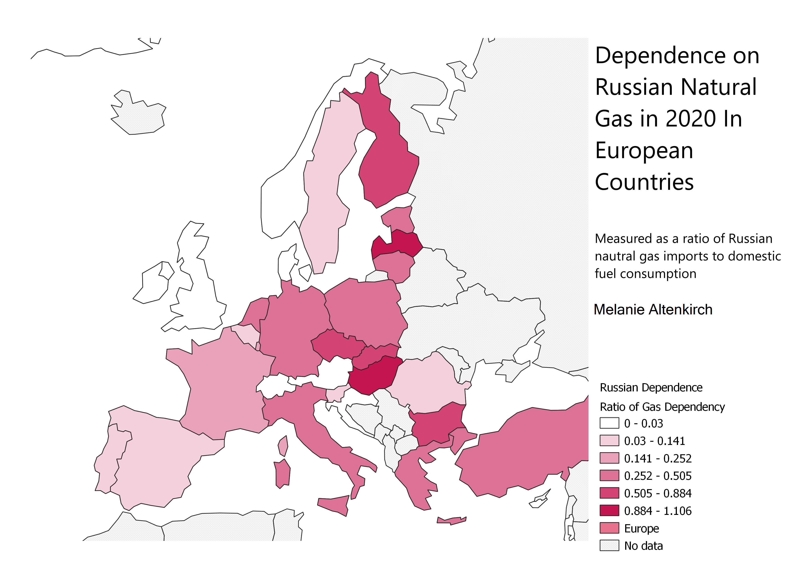

Homework 7: Chloropleth Based on Data of my Choice
Melanie Altenkirch. October 5, 2022
For this homework assignment, I created a chloropleth based on data from the International Energy Agency.
The dataset measured rates of energy dependence on Russian resources through importation and domestic consumption statistics from 1990 until 2020 and measured the categories of natural gas, oil, and coal.
Because of the relevance of natural gas importation from Russia for the Ukraine crisis, I chose to focus on affected areas in Europe in the year 2020.
I chose to measure the data using the natural breaks becuase it increased differentiation in the higher and lower ends of the spectrum. For example, a difference cannot be made between the United Kingdom and Spain and Portugal using the equal interval measure.
The data is mapped in 3035, that focuses on the UTM zones in Europe. The areas with no data are depicted with crossing lines, which showed up much more visible for me in QGIS.
